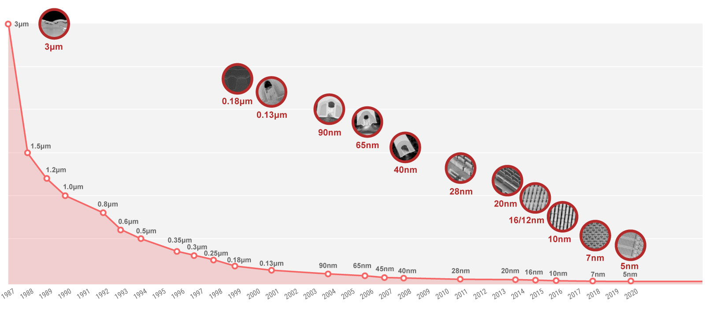

Fabs¶
5nm |
||||||
7nm |
||||||
12nm |
TSMC¶
台积电 成立于1987年，总部台湾新竹，是全球第一家专业积体电路制造服务（晶圆代工foundry）企业，总部与主要工厂位于中国台湾省的新竹市科学园区。
荷兰飞利浦公司持股14%，中国台湾行政院持股12%
N3¶
3nm
台积公司的3奈米（N3）制程技术将是5奈米（N5）制程技术之后的另一个全世代制程，在N3制程技术推出时将会是业界最先进的制程技术，具备最佳的PPA及电晶体技术。
相较于N5制程技术，N3制程技术的逻辑密度将增加约70%，在相同功耗下速度提升10-15%，或者在相同速度下功耗降低25-30%。
N3制程技术的开发进度符合预期且进展良好，未来将提供完整的平台来支援行动通讯及高效能运算应用，预期2021年将接获多个客户产品投片。
预计于2022下半年开始量产。
N5¶
5nm
于2020年第二季成功量产领先业界的5奈米（N5）鳍式场效电晶体（Fin Field-Effect Transistor，FinFET）制程技术，并于下半年快速提升产能。
N5是台积公司第二代使用极紫外光（EUV）技术的制程，协助客户实现行动通讯及高效能运算应用等产品的创新。
作为业界最先进的解决方案，N5技术拥有最佳的效能、功耗及面积（PPA），相较于7奈米（N7）技术，N5技术速度增快约20%，或者功耗降低约40%。
此外，计划推出4奈米（N4）技术，系N5技术的强化版，为下一世代N5技术产品提供效能、功耗、及密度方面进一步的强化。
N4技术的开发依照计划进行并有很好的进展，并预计于2022年开始量产。
N4P¶
4nm
2021年10月26日，台积电宣布推出N4P制程工艺
N16(16nm)¶
16nm
16FFC¶
N28(28nm)¶
28nm
台积电28nm先后衍生出了LP、HPM、HPC、HPC+四种版本
28LP¶
28nm 28HPC HPC+
28HP¶
28HPC/HPC+工艺相对于28LP/HP/HPL/HPM，能更好的控制全局慢速和全局快速（SSG，FFG）工艺角，因此可以提高系统级芯片（SoC）性能。
N40(40nm)¶
40nm
40LP¶
SAMSUNG¶
3D FinFET
GF¶
GlobalFoundries FinFET 12nm 28nm 40nm
格罗方德 成立于2009年3月，总部纽约，由AMD拆分而来、与阿联酋阿布扎比先进技术投资公司(ATIC)和穆巴达拉发展公司(Mubadala)联合投资成立的半导体制造企业。
UMC¶
28nm 40nm
联华电子 成立于1980年，总部台湾新竹
SMIC¶
28nm 中国大陆规模最大、技术水准最高、世界排名第四的晶片代工企业 上海 北京 天津 深圳
中芯国际SMIC 成立于2000年(开曼群岛)，总部上海张江，是国内首个能提供28纳米先进制程技术的企业,第一代14纳米FinFET技术取得了突破性进展，并于2019年第四季度进入量产，代表了中国大陆自主研发集成电路的最先进水平。
SkyWater¶
130nm 90nm
SkyWater工厂 最初由位于明尼苏达州的Control Data Corporation（CDC）在1980年代建立。CDC晶圆厂于1991年被赛普拉斯半导体公司收购。
在赛普拉斯时代，该工厂进行了多次扩建和升级，在2000年代末一直与摩尔定律保持同步，并以位于美国的生产设施与亚洲的晶圆厂竞争而闻名。SkyWater于2017年从赛普拉斯（Cypress）拆分出来，得到了明尼苏达州Oxbow Industries的私募股权支持。
2017年从赛普拉斯半导体公司中分离出来的SkyWater收购了位于明尼苏达州布卢明顿市的赛普拉斯公司（如今的英飞凌）的工厂，开启了Foundry业务之路。
SkyWater是唯一一家美国国内的纯代工公司，因此它是美国国防部可信赖的代工计划的一部分，以在美国境内提供安全的供应来源。
2020年11月12日，Google与SkyWater和Efabless合作，实现定制ASIC的开源制造。Google赞助的开源多项目晶圆（MPW）航天飞机将接受设计提交，这些航天飞机将在SkyWater上运行。
Google 将这项计划名为 Open MPW Shuttle Program ，允许任何人利用开源 PDK 和其他开源 EDA 工具来提交开源集成电路设计，Google 会为他们免费制造，不会收取任何费用。
芯片制造是在SkyWater 130nm 工艺（SKY130）上完成
其业务始于130nm, 而今年开始提供90nm服务。而IBM和英特尔早在2002年就开始首次生产90 nm芯片，TSMC于2004年推出直径300 mm的晶圆。但SkyWater仍在使用200毫米晶圆。
Skywater正在为D-Wave的量子计算机制造量子比特